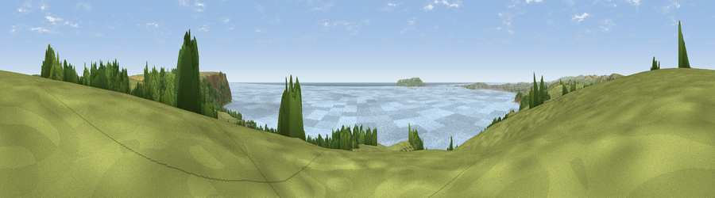

Viewpoint near Osmington
#2052 in England · top 10% of its area beats it · near OsmingtonWhere it is
The exact computed spot (SY 74175 82125). Click the marker for map links.
The view, rendered

A 360° render of this exact spot computed from the terrain model, tree cover and land cover — summer colours, afternoon light, calibrated against photographs of famous viewpoints. Real trees, hedges and buildings will differ in detail.
The panorama
Grey silhouette: terrain skyline in each direction (720 bearings, Earth curvature and refraction included). Dashed green: skyline with trees (+15 m) and buildings (+8 m) as obstacles. Blue strip: how far the ground is visible on each bearing.
Where the view opens
Wedge length = distance to the farthest visible ground on that bearing (vegetation-aware). Rings at 10, 25 and 50 km.
What fills the view
38% water · 35% grassland · 25% woodland · 1% cropland ·
Angular shares of the visible panorama (visual magnitude), not map area. Landscape diversity 0.51 (0–1 Shannon).
Key numbers
More beautiful places nearby
The staircase of upgrades: each row has a higher view potential than everything closer. Driving times are estimates from straight-line distance, calibrated against real road routing — check an actual route before setting out.
| Place | Direction | Drive | Score |
|---|---|---|---|
| Viewpoint near Owermoigne | E · 2 km | ~5 min | 81.0 |
| Viewpoint near Chaldon Herring | ESE · 3 km | ~6 min | 82.9 |
| Viewpoint near Chaldon Herring | ESE · 3 km | ~7 min | 83.5 |
| Viewpoint near Chaldon Herring | ESE · 4 km | ~9 min | 83.8 |
| Bindon Hill | E · 10 km | ~19 min | 84.5 |
| Rings Hill | E · 12 km | ~23 min | 87.5 |
| Viewpoint near Abbotsbury | WNW · 19 km | ~32 min | 89.0 |
| Viewpoint near West Bexington | WNW · 20 km | ~34 min | 89.5 |
50.63824, -2.36656 · source: screening · position refined by local search. Computed location — check access rights before visiting.